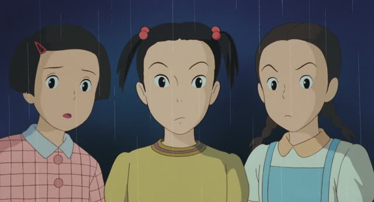

～の
| Polite | ～んですか |
|---|---|
| Casual | ～の？ |
Same meaning: asking for the story. Only the politeness changes.
Noun or な-adjective before it? Add な first.
| Word | Add | Ending | ||
|---|---|---|---|---|
| Noun | 学生 | な | の？ | Are you a student? |
| な-adjective | 静か | な | の？ | Is it quiet? |
| Verb | 行く | – | の？ | Are you going? |
| い-adjective | 高い | – | の？ | Is it expensive? |

Source unknown
え、ここで申請できるんですか？
"Huh, can I apply here?"
の at the end of a question asks for the story behind something you noticed. It goes after a verb or adjective in plain form (after nouns and な-adjectives, add な: 学生なの？).
Polite, it's ん instead of の, plus ですか. On this card, she's surprised you can apply right here and wants the story: できるんですか？
Use the polite one with strangers, staff and clients.

Source unknown
このジャグ どうしたの？
"Where did this dispenser come from?"
On this card, they spot a drink dispenser that wasn't there before: どうしたの？ Without の, どうした？ sounds blunter, just "what happened?".
Quick Examples
Your friend walks in wearing flip-flops, a towel over their shoulder, a bag of snacks.
海行くの？
"Oh, you're going to the beach?"
Saw somethingDinner's been on the table for 20 minutes. Your friend hasn't touched their plate.
食べないの？
"You're not eating? Everything okay?"
Saw somethingOver coffee, your friend casually says 「昨日、仕事辞めた」.
辞めたの？
"Wait, you quit? What happened?"
Heard somethingYour friend shows up soaked, no umbrella.
雨なの？
"Oh, is it raining?"
Saw somethingA client's sweater is covered in cat hair.
家に猫がいるんですか？
"Oh, do you have a cat?"
Saw somethingWith and without
海行く？
"Wanna go to the beach?" Out of nowhere, you're bored.
海行くの？
"Oh, you're going to the beach?" You saw the towel.
食べない？
"Want some?" Offering your pizza.
食べないの？
"You're not eating?" You saw the full plate.
Polite: んですか
Same feeling, just polite. ん is a squashed の. More about ～んです
猫いるの？
To a friend.
猫がいるんですか？
To a client.
Written: のですか
The full form is の + ですか = のですか. Said quickly, the の gets squashed into ん, so you get んですか. Same meaning, both correct. In conversation it's almost always んですか. のですか is for books and articles, and said out loud it sounds stiff, like a news reader.
猫がいるんですか？
What you'll hear and say.
猫がいるのですか？
Books, articles, very formal speech.
Examples from Media

Shirokuma Cafe · Season 1, Episode 4
へぇ～ 今日は折り紙折らないんですか？
"Oh, you're not doing origami today?"
They usually fold origami, but today they aren't. You noticed, so you ask. The へぇ～ is a hint too: it's the sound of reacting to something.

Source unknown
何これ？これ海底洞窟なの？
"What's this? Is this an underwater cave?"
You're looking at something strange and asking what's going on. 洞窟 is a noun, so な goes before の.

New Atashin'chi · Episode 1
食べちゃったの？
"Wait, you ate it?!"
The food is gone, she noticed, and she wants the story. 食べちゃった is a casual 食べてしまった: ate it all up.

1 Litre of Tears · Episode 1
クラス委員に選ばれたの？ ‐すげえ。
"You got picked as class rep? Wow."
Just heard the news and wants the story. Past verb + の, rising voice.
1 Litre of Tears · Episode 10
寝たの？
"Did she fall asleep?"
の at the end: a soft casual question.

Only Yesterday
平気なの？
"Is that okay?"
な-word + な + の.
Samurai Champloo · Episode 16
ヤバいの？
"Is it bad?"

Shirokuma Cafe · Episode 37
何してるの？
"What are you doing?"
の asks for the story behind what you see.
Further Reading
A Dictionary of Basic Japanese Grammar
Entry "no⁴" (sentence-final particle) · pp. 322–324
Tae Kim's Guide to Japanese Grammar
Noun-related Particles · The 「の」 particle as explanation